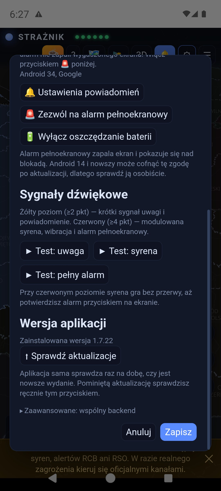
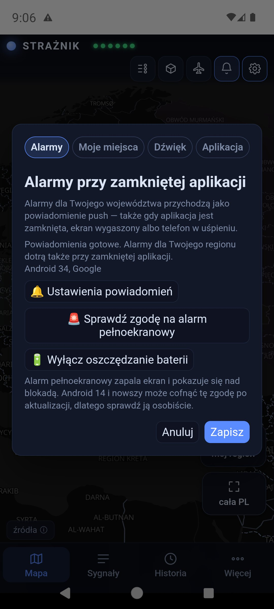
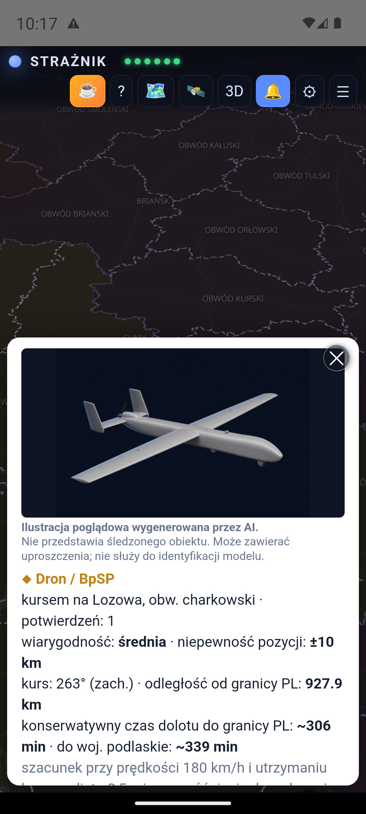
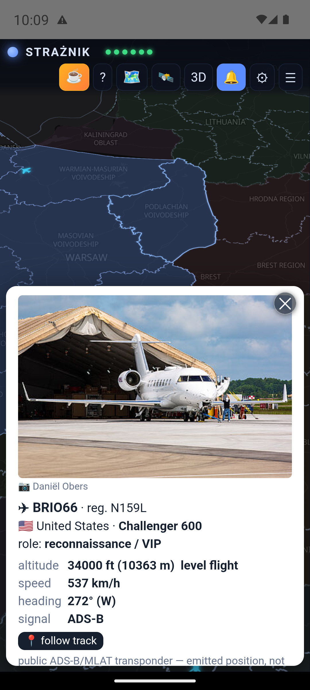
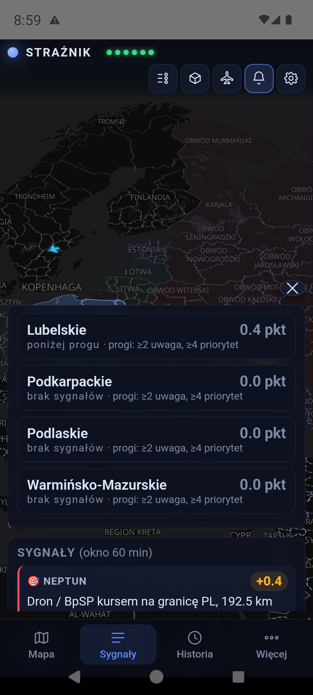
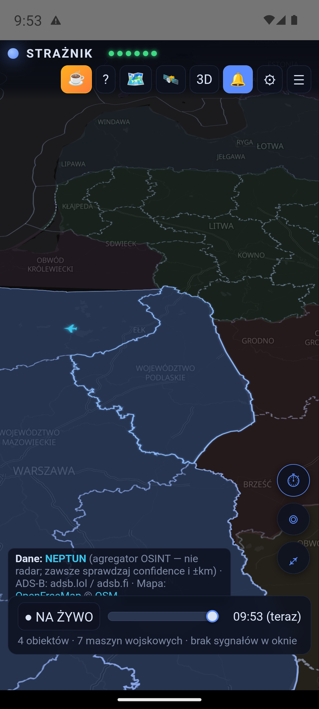
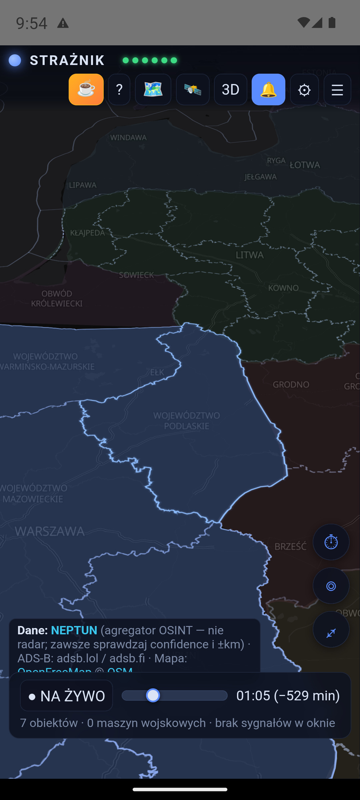

Czym jest Strażnik
Serwer zbiera dane i oblicza punktację, a aplikacja pokazuje mapę, źródła i historię. Android otrzymuje alarmy przez push. Nie potrzebujesz konta ani własnego serwera.
Połączenie źródeł pomaga ocenić sytuację, ale nie każdy alarm wymaga kilku źródeł: odpowiedni komunikat oficjalny, krytyczna relacja medialna lub bliski obiekt mogą samodzielnie osiągnąć próg. Wynik jest wskaźnikiem aplikacji, a nie prawdopodobieństwem uderzenia.
1. Instalacja i kolejne aktualizacje
- Pobierz najnowszy Straznik.apk na telefon z Androidem.
- Otwórz plik w folderze Pobrane. Jeśli Android poprosi, zezwól tej przeglądarce lub menedżerowi plików na instalowanie aplikacji z tego źródła.
- Zatwierdź instalację i uruchom Strażnika. Pozwól systemowi przeskanować plik; nie wyłączaj Play Protect.
- Zezwól na powiadomienia, wybierz województwo i sprawdź zgodę na pełny ekran.
Jeśli aplikacja GitHub przechwytuje link i pobieranie staje, otwórz link w przeglądarce. Dostępna jest też kopia APK w repozytorium.
Aktualizacja z poziomu aplikacji
Strażnik sprawdza dostępność wydania raz na dobę. W oknie aktualizacji zobaczysz wersję i opis zmian. Możesz też wejść w ⚙ → Sprawdź aktualizacje.
Przy zwykłej, niekrytycznej aktualizacji wybierz Później, aby zamknąć komunikat na bieżącą sesję. Gdy wybierzesz instalację, aplikacja pobierze APK i sprawdzi jego SHA-256, a Android poprosi o zatwierdzenie. Aktualizacja nadal wymaga pobrania pliku; nie musisz jednak szukać go ręcznie.
Instaluj nowe wydanie na istniejące, bez odinstalowywania — zachowasz ustawienia. Publikowany plik jest podpisanym wydaniem release. Po aktualizacji sprawdź zgody na powiadomienia i pełny ekran.
{kind=link}

2. Województwo, język i zgody
Otwórz ⚙, wybierz jedno z 16 województw i naciśnij Zapisz. To region powiadomień, startowego widoku mapy i karty „mój region”. Bez wyboru subskrypcja obejmuje cztery województwa wschodnie: lubelskie, podkarpackie, podlaskie i warmińsko-mazurskie.
Wykryj z GPS opcjonalnie rozpoznaje województwo na urządzeniu. Współrzędne nie są wysyłane do serwera Strażnika.
Polski / English
Wybór języka od razu zmienia podgląd ustawień. Zapisz zatwierdza wybór i odświeża aplikację; Anuluj zachowuje poprzedni język. Angielska wersja obejmuje interfejs, opisy obiektów i samolotów oraz nazwy na mapie. Gdy brak nazwy angielskiej, może pozostać nazwa źródłowa. Cytowane treści zewnętrznych komunikatów nie muszą być przetłumaczone.
Powiadomienia
W ustawieniach sprawdź powiadomienia systemowe, kanały alarmów i zgodę na alarm pełnoekranowy. Dostępny jest również skrót do wyłączenia optymalizacji baterii dla aplikacji. Działanie zależy od ustawień i ograniczeń telefonu.
{kind=link}

3. Mapa i nowe ikony
Przesuwaj mapę palcem, powiększaj dwoma palcami i dotykaj obiektów, aby otworzyć szczegóły. Kolor województwa odzwierciedla punktację: poniżej 2 pkt — niebieski, od 2 pkt — żółty, od 4 pkt — czerwony. W widoku 3D wysokość bryły rośnie z wynikiem.
Obiekty NEPTUN mają teraz różne kształty, nie tylko kolory. Samoloty i śmigłowce ADS-B zachowały swoje sylwetki. Legenda nie zawiera już osobnej sekcji odcieni państw.
| Obiekt | Jak go rozpoznać |
|---|---|
| Dron / BpSP | Żółta sylwetka płatowca. |
| Shahed | Pomarańczowe skrzydło delta. |
| FPV | Cztery wirniki; lokalny dron, bez punktów w tym modelu. |
| Dron rozpoznawczy | Jasna sylwetka z długimi skrzydłami. |
| Rakieta manewrująca | Czerwony korpus ze skrzydłami. |
| Rakieta balistyczna | Różowy, smukły grot z płomieniem. |
| KAB | Żółta sylwetka bomby kierowanej. |
| MiG-31K — nosiciel | Fioletowa sylwetka samolotu ze źródła NEPTUN. |
| Obiekt nierozpoznany | Szary romb ze znakiem zapytania. |
Okrąg wokół obiektu oznacza niepewność pozycji (±km). Większy okrąg oznacza większy obszar niepewności, nie większy zasięg rażenia. Przerywana linia pokazuje ślad lotu.

Podgląd obiektu i zdjęcia
Karta obiektu podaje typ, rejon, liczbę potwierdzeń, wiarygodność, niepewność pozycji, kurs, odległość od Polski i — gdy można go oszacować — czas dolotu. Ilustracje AI są podpisane jako poglądowe: nie przedstawiają śledzonego egzemplarza i nie służą do rozpoznawania modelu.
Po dotknięciu samolotu ADS-B zobaczysz znak wywoławczy, rejestrację, kraj, model, przeznaczenie, wysokość, prędkość i kurs, zależnie od dostępnych danych. Zdjęcie rejestrowe pojawia się, jeśli dostawca je udostępnia. Śledź trasę pozwala obserwować zebrany ślad. Brak transpondera lub odbioru oznacza brak pozycji — mapa nie pokazuje wszystkich maszyn wojskowych.
{kind=link}

{kind=link}

4. Przyciski i zamykanie paneli
| Przycisk | Działanie |
|---|---|
| STRAŻNIK + sześć diod | Status NEPTUN, Alarmy UA, ADS-B, RSS, RCB i PAŻP. Zielona dioda oznacza dostępność danej warstwy, a nie potwierdzenie bezpieczeństwa. Nazwa aplikacji udostępnia objaśnienie również po dotknięciu na telefonie. |
| ☕ / ? | Dobrowolne wsparcie autora / opis działania i funkcji. |
| Legenda / 🗺️ | Znaczenie ikon, niepewności i progów punktowych. |
| 🛰️ | Widok obcych maszyn i zarejestrowanych obserwacji. |
| 3D / 2D | Przełączanie mapy przestrzennej i płaskiej. |
| 🔔 / ⚙ / ☰ | Powiadomienia / ustawienia / panel sygnałów. |
| ⏱ / ◎ / ⤢ | Historia 12 godzin / powrót do mojego regionu / cały obszar. |
| Pobierz aplikację / Instrukcja | Przyciski dostępne na stronie WWW; nie są wyświetlane w APK. |
Panel sygnałów nie zwija się po kilku sekundach. Zamkniesz go krzyżykiem lub dotknięciem mapy poza panelem. Legenda i pozostałe panele również obsługują kliknięcie poza swoim obszarem. W ustawieniach użyj Zapisz, aby zatwierdzić zmiany.
5. Panel sygnałów
☰ otwiera karty województw. Dotknij regionu, aby zobaczyć źródła jego wyniku. Twój region ma obwódkę i podpis „mój region”. Panel zawiera sygnały z okna 60 minut, obiekty blisko granicy oraz publiczne obserwacje lotnictwa wojskowego.
Sygnały są uporządkowane według faktycznie zaliczonego wkładu. Widoczna liczba uwzględnia limity źródła i wygaszanie w czasie; przekreślona wartość wyjaśnia, dlaczego nie zaliczono pełnej punktacji. Kolejne zgłoszenia tego samego obiektu nie oznaczają kolejnych fizycznych obiektów.
Wpis Przeniesienie / SPILLOVER wyjaśnia wkład z innego województwa. Tytuł medialny prowadzi do źródła. Sprawdź jego treść i czas publikacji.
Kamery w regionie prowadzą do dostępnych podglądów otoczenia. To kamery naziemne, nie narzędzie wykrywania obiektów powietrznych.
{kind=link}

6. Historia 12 godzin
Naciśnij ⏱ i przeciągaj suwak w lewo lub w prawo. Mapa oraz panel pokazują wybraną chwilę, nie bieżący stan. Etykieta podaje godzinę i liczbę minut wstecz. ● NA ŻYWO przywraca aktualny widok.
Pakiet historii pobierany jest na urządzenie, a przewijanie korzysta z lokalnego bufora. Każdy ruch palca nie wysyła osobnego zapytania do serwera. Migawki powstają zwykle co 2 minuty: to odtwarzanie zapisanych próbek, nie ciągłe nagranie radarowe. Długość dostępnej historii zależy od ciągłości zapisu i źródeł.
{kind=link}

{kind=link}

Sygnał w oknie 60 minut może pozostać na liście po zniknięciu obiektu z mapy. To różne rzeczy: lista opisuje zarejestrowane zdarzenia, mapa — pozycje dostępne w konkretnej migawce. Zniknięcie obiektu nie dowodzi zestrzelenia. Dla części obcych maszyn aplikacja może pokazać przygaszoną ostatnią obserwację, odróżnioną od bieżącej pozycji.
7. Żółty i czerwony alarm


Te dwa obrazy dokumentują wcześniejsze testy, nie bieżące zagrożenie. Teksty, liczby i odległości na nich są przykładami testowymi, a nie aktualną tabelą punktacji. Zrzut nie oddaje dźwięku ani migania ekranu.
| Wynik | Sygnalizacja |
|---|---|
| Poniżej 2 pkt | Informacje pozostają na mapie i w panelu, bez alarmu progowego. |
| Od 2 do poniżej 4 pkt | Żółty poziom „PODWYŻSZONA UWAGA”: krótki sygnał uwagi i powiadomienie, które może pojawić się jako heads-up. |
| Od 4 pkt | Czerwony „WYSOKI PRIORYTET”: syrena, wibracja i alarm pełnoekranowy, jeśli system i zgody na to pozwalają. Potwierdzenie na ekranie wycisza alarm. |
W ⚙ dostępne są Test: uwaga, Test: syrena oraz Test: pełny alarm. To testy lokalne na Twoim urządzeniu. Nie potwierdzają dostarczenia push z serwera. W 1.7.15 podniesiono poziom czerwonej syreny; rzeczywista głośność zależy również od telefonu i ustawień dźwięku.
8. Push, strona WWW i tryb awaryjny
Android: serwer wysyła push przez Firebase dla wybranego województwa. Mechanizm jest przeznaczony do działania również przy zamkniętej aplikacji i zablokowanym ekranie. Wymaga łączności i poprawnej konfiguracji telefonu. „Wymuś zatrzymanie” w ustawieniach Androida może blokować odbiór do ponownego uruchomienia aplikacji. Nie ma już usługi „nasłuch aktywny”.
Przeglądarka: sama zakładka z adresem nie włącza ostrzegania. Otwarta karta może pokazywać i odtwarzać alarmy; dźwięk wymaga interakcji użytkownika. Odbiór przy zamkniętej karcie wymaga oddzielnej zgody i subskrypcji Web Push oraz wsparcia przeglądarki i systemu. Zachowanie nie jest identyczne z natywnym pełnoekranowym alarmem Androida.
Awaria serwera: po nieudanych próbach połączenia otwarta aplikacja uruchamia wbudowany silnik. Nadal potrzebuje internetu do źródeł. W obecnym kodzie sprawdza powrót serwera co minutę i po odzyskaniu połączenia zatrzymuje własne odpytywanie. W czasie aktywnego alarmu odkłada przełączenie. Tryb awaryjny nie zapewnia zastępczego całodobowego monitorowania po zamknięciu aplikacji.
Zapowiedź testów może pojawić się jako komunikat do potwierdzenia i zamknięcia. Sam komunikat nie jest dowodem działania ścieżki alarmowej.
9. Skąd biorą się punkty
Podstawowe okno wynosi 60 minut. Przez pierwsze 30 minut sygnał zachowuje pełną wagę, następnie maleje ona liniowo do zera. Każda klasa źródła ma limit wkładu; kolejna obserwacja tego samego toru NEPTUN nie jest sumowana jako nowy obiekt.
| Źródło | Co jest uwzględniane | Waga / limit |
|---|---|---|
| NEPTUN — obiekty | Typ, liczba obiektów w zgłoszeniu, odległość od granicy, kurs, wiarygodność, potwierdzenia i stan obserwacji. | Łącznie maks. 8 pkt |
| Alarmy UA | Alarm w wybranych obwodach zachodniej Ukrainy. | 1 pkt |
| Media | Dopasowanie tematu i kontekstu: zwykłe 1,5 pkt; krytyczna relacja 2 pkt. Filtry odrzucają m.in. poradniki, testy i odwołania, lecz mogą się mylić. | Maks. 2 pkt |
| RCB / RSO | Odpowiednie opublikowane komunikaty o zagrożeniach powietrznych. Czas publikacji w źródle może różnić się od doręczenia SMS. | 2 pkt, limit 2 |
| ADS-B | Co najmniej 3 maszyny i ponad dwukrotność tła dla tej pory doby, zbieranego przez 7 dni. | 1 pkt, limit 1 |
| PAŻP | Rzadkie ADHOC/R/NPZ/D od ziemi do poziomu lotu; filtry rutyny i powtarzania designatorów. Sama aktywacja nie dowodzi zagrożenia militarnego. | 0,5 pkt, limit 1 |
| Media bałtyckie | Incydenty LT/LV/EE jako kontekst dla Podlaskiego i Warmińsko-Mazurskiego. Rozpoznane odwołanie wygasza ten sam incydent. | 1 pkt |
| Strefy sąsiadów | Wybrane restrykcje LT/EE i północnej Rumunii (od 47°N). Łotewskie strefy i oficjalne komunikaty LV są na etapie obserwacji bez punktów. | 0,3 pkt, limit 0,6 |
Obiekty: płynna zależność od odległości
Wagi typów: balistyczna 3,0; MiG-31K 2,6; manewrująca 2,4; KAB 1,8; Shahed 1,4; dron 1,1; rozpoznawczy 0,5; FPV 0. Waga jest mnożona m.in. przez pierwiastek z liczby obiektów i współczynniki jakości danych oraz kursu.
Odległość jest interpolowana płynnie przez punkty: 0 km ×1,7; 15 ×1,6; 45 ×1,3; 80 ×1,0; 110 ×0,7; 150 ×0,4; 200 ×0,25; 250 ×0,1. Od 250 km zwykły wkład wynosi zero. Przy nieznanym kursie punktowanie jest ograniczone do bliskich obiektów i obniżone. Dla rakiet i MiG-31K do 60 km, z co najmniej dwoma potwierdzeniami, działa minimum 2 pkt skalowane współczynnikiem kursu.
Czas dolotu
Karta pokazuje szacunek do granicy Polski oraz do granicy wybranego województwa, nie do adresu użytkownika. Aplikacja korzysta z prędkości źródłowej, gdy jest dostępna, albo typowej dla klasy. Odejmuje bufor 2,5 minuty wynikający z wcześniejszych pomiarów opóźnienia. Bufor nie pokrywa każdej możliwej zwłoki.
Aktualny mechanizm progowy ETA odnosi się do granicy Polski: przy znanym kursie, co najmniej dwóch potwierdzeniach i średniej lub wysokiej wiarygodności może podnieść wkład obiektu do 2 pkt przy ≤10 min lub 4 pkt przy ≤5 min. Nie dolicza drugiego kompletu punktów za ten sam obiekt.
Przeniesienie na sąsiednie województwa
Wynik co najmniej 2 pkt może wnosić 40% do pierwszego kręgu sąsiadów, 16% do drugiego itd., do limitów algorytmu. Przykładowe 5 pkt w Lubelskiem wnosi 2 pkt do pierwszego kręgu i 0,8 do drugiego. To reguła kontekstu regionalnego, nie prognoza trasy obiektu. Wkład jest opisany w panelu.
10. Co obejmuje obecne wydanie
Polski i angielski
Podgląd języka przed zapisaniem, angielskie opisy maszyn i geograficzne etykiety mapy.
Rozpoznawalne ikony
Oddzielne sylwetki dronów, rakiet, KAB i obiektów nieznanych, aktualna legenda i podpisane ilustracje poglądowe.
Wygodniejsze sprawdzanie sytuacji
Panel bez czasowego zwijania, szczegóły obiektów, lokalne przewijanie historii i obserwacje obcych maszyn.
Aktualizacje i syrena
Opis zmian w aktualizatorze, odłożenie niekrytycznej aktualizacji i zwiększony poziom czerwonej syreny.
Pełna lista zmian: wydania na GitHubie.
11. Ograniczenia i rozwiązywanie problemów
- Czerwona dioda: jedna z warstw nie odpowiada lub zgłasza błąd. Pozostałe mogą działać. Sześć diod nie obejmuje osobnym wskaźnikiem każdego dodatkowego źródła.
- Pusta mapa mimo działających sygnałów: kafelki mapy są pobierane oddzielnie. Sprawdź połączenie, spróbuj innej sieci i uruchom aplikację ponownie. Antywirus lub proxy przechwytujące HTTPS może blokować te połączenia. Wydanie produkcyjne nie ufa certyfikatom dodanym przez użytkownika; dawna rada, że aplikacja ufa certyfikatowi Avasta, jest nieaktualna. Nie rozwiązuj tego przez stałe wyłączenie ochrony.
- Brak push: sprawdź region, zgody, kanały, łączność i czy aplikacja nie została wymuszenie zatrzymana. Test dźwięku w otwartej aplikacji nie sprawdza całego toru push.
- Obiekt tylko na liście: sygnał i aktualna pozycja mają różne okresy dostępności. Sprawdź godzinę, tryb historii oraz ostatnią obserwację.
- Niepełny obraz: NEPTUN jest agregatorem OSINT, ADS-B zależy od publicznych emisji i odbiorników, a komunikaty i RSS mogą pojawiać się z opóźnieniem. Brak danych lub punktów nie dowodzi braku zagrożenia.
12. Własny serwer — opcjonalnie
Puste pole w ⚙ → Zaawansowane: wspólny backend oznacza domyślny serwer Strażnika. Własny adres podaj tylko wtedy, gdy sam utrzymujesz zgodny backend i jego powiadomienia.
Wymagany jest HTTPS z certyfikatem zaufanym przez system. Zewnętrzny HTTP i ręcznie doinstalowane certyfikaty nie są obsługiwane w produkcyjnym APK. Wewnętrzny adres localhost aplikacji jest osobnym wyjątkiem technicznym. Opis uruchomienia backendu znajduje się w README.
13. Prywatność i źródła
Brak konta, reklam i analityki zachowania użytkownika. Ustawienia zapisują się lokalnie. Wybrany region służy też do subskrypcji powiadomień; infrastruktura push obsługuje identyfikator subskrypcji urządzenia lub przeglądarki. GPS służy opcjonalnemu rozpoznaniu województwa na urządzeniu.
Serwer i dostawcy map, powiadomień, zdjęć oraz danych otrzymują żądania sieciowe i mogą prowadzić zwykłe logi techniczne. Brak telemetrii aplikacji nie oznacza braku takiego ruchu. Historia serwerowa po pobraniu jest przewijana w pamięci urządzenia; tryb wbudowany zapisuje własne migawki lokalnie. Rozmiar zależy od liczby danych i obejmuje kroczące okno 12 godzin.
Dane: NEPTUN · adsb.lol / adsb.fi i dostawcy zapasowi · RCB / RSO · PAŻP · media regionalne i bałtyckie · strefy sąsiadów. Mapa: OpenFreeMap, © OpenStreetMap. Zdjęcia maszyn i ich autorzy są podpisani w podglądach.